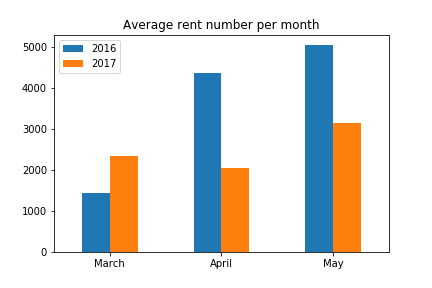
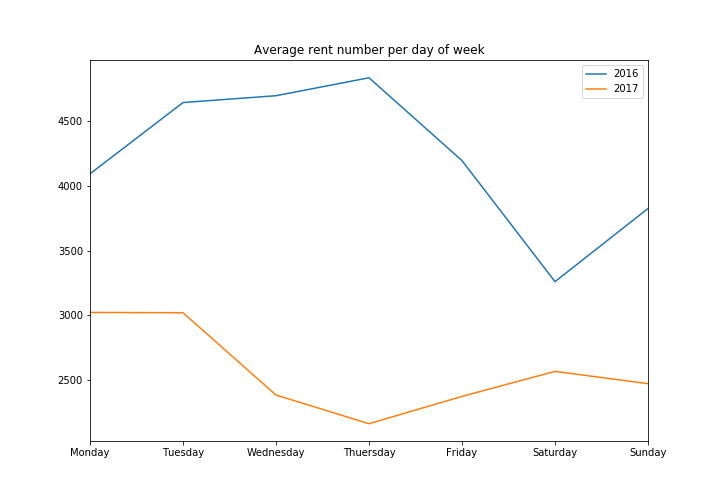
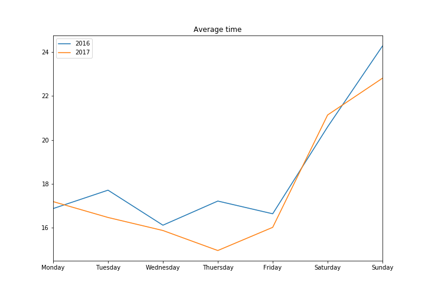
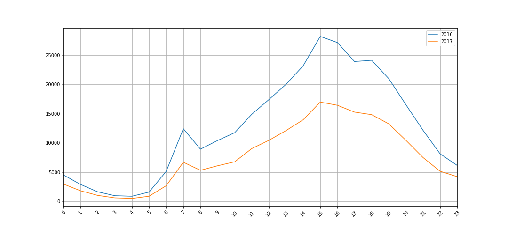
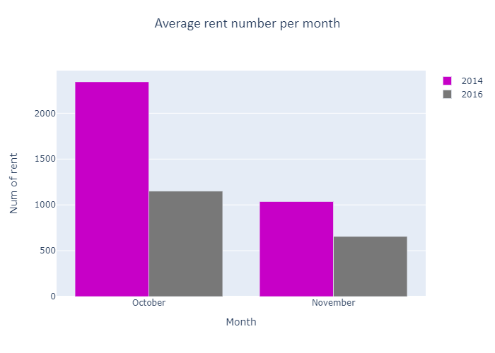
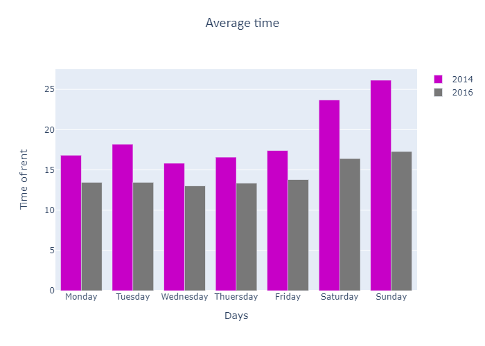
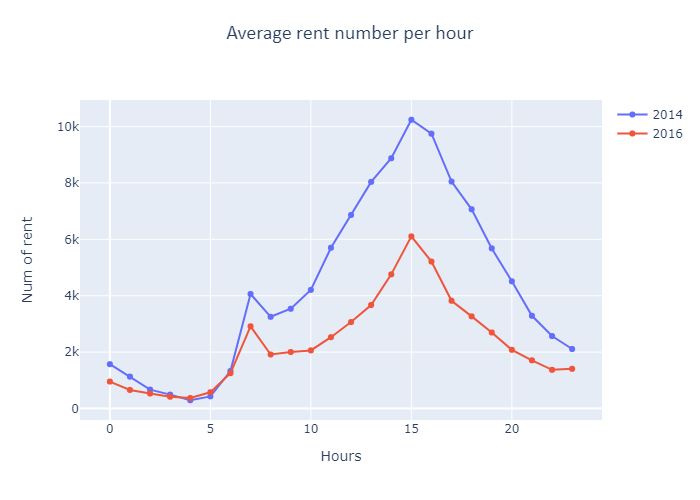

| Main | Project | Contact |
Some statistics
I don't have complete data, so we have to do analysis two times. First we will compare city bike in Lublin in 2016 (March, April, May) and 2017(March, April, May), and next 2014(October, November) and 2016(October, November).
FIRST PART OF ANALYSIS (2016 vs 2017)
I compare first 3 months from 2016 and 2017. The bikes were available by 72 days.
In 2016 were more available bikes than 2017 (891 vs 850 ). It was the one reasons why in 2016 were more rentals than 2017 (304238 vs 185291). The second reason could by the weather. In 2017 average day's temperature was lower than 2016 at the same period.
The average time of rental was similar in 2016 and 2017 (18.24 vs 17.75).
Rentals under 20 minutes are 78% all rentals in 2016 and 80% in 2017.
The most popular month in both year was May.

The most popular day in 2016 was 5th April - it was on Tuesday, very sunny day. In 2017 top day was 2th April, on very sunny Sunday
The most popular start and end station is the same in both cases - station 315269
The bikes were rented every 28 sec in 2016 and every 33 sec in 2017.
The average rent number per month was higer in 2016 in April and May but lower in March. We can notice that num of rent in 2017 is similar in every month. In 2016 in March were definitely fewer rentals than April and May - upward trend
The average num rent per day of week in 2016 and 2017 is higer in the week tha at the weekend. The most popular day in 2016 was Thuersday and in 2017 Monday.

The average time of rent is higer at the weekend than the week. People have more time to go for a bike ride at the weekend. In the week bikes are usefull for travel to job or school so rentals are shorter.

The average number of rents per hour is very similar in 2016 and 2017. We can see increase num of rent beetwen 7 and 8 a.m and 3 and 4 p.m - we can assume that for many people the bicycle is a kind of transport to and from work and school

SECOND PART OF ANALYSIS (2016 vs 2014)
I compare 2 months from 2014 and 2016. The bikes were available by 61 days.
In 2014 were more rentals than 2016 (103692 vs 55310).
The average time of rental:18.77min in 2014 and 14.29min in 2016.
Rentals under 20 minutes are 77% all rentals in 2014 and 88% in 2016.
The most popular day in 2014 was 13th October - it was on Monday. In 2016 top day was 2th October, on Sunday.
The bikes were rented every 51 sec in 2014 and every 28 sec in 2016.
The average rent number per month was higer in 2014. We can notice that num of rent in October is two times the size of November. It is probably becouse the weather was beter in October.

The average num rent per day of week in 2014 and 2016 is higer in the week than at the weekend. The most popular day in 2014 was Wednesday and in 2016 Thuersday.

The average time of rent is higer at the weekend than the week. People have more time to go for a bike ride at the weekend. In the week bikes are usefull for travel to job or school so rentals are shorter.

The average number of rents per hour is very similar in 2014 and 2016. We can see increase num of rent beetwen 7 and 8 a.m and 3 and 4 p.m - we can assume that for many people the bicycle is a kind of transport to and from work and school

The diferences beetwen 2014 and 2016 might be caused by fact that City Bike Lublin have started in 2014 in 11 September. This represented new transport opportunities and a new way of spending time in 2014, so everyone wanted to try it. This is probably the reason why in 2014 we had two times size of rentals than in 2016.